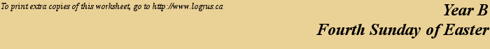

This
week's lessons: Acts
4:5-12, Psalm
23, 1
John 3:16-24, John
10:11-18
Emmanuel Community Church
Inter-generational Lectionary Study;
Sundays from 10:0 to 10:45 in the Board Room
Opening
Opening prayer by leader, or invite another participant to pray, or use:
Almighty God, who has caused all Holy Scripture to be written for our learning, open our ears and hearts today to learn from your word and from one another, we ask in Jesus' Name. Amen
Set the calendar-clock to the right date. This is the fourth Sunday of Easter: three more Sundays remain in this holiest of seasons, culminating in Pentecost, the birthday of the church.
Review of Last Week
Last week's lessons focused on: trust and witness. The courage to speak out, the right words to say, the Spirit that guides us – these are of God. Our personal experiences are the substance that give our witness immediacy and personal commitment.
What was the sermon on? - Learning to say “No” to bad choices: not just to things that are wrong for us, but also to things that are second-best. God's plan for us is for the best.
What was the Gospel lesson? - Jesus appears to the gathered disciples, after the two from the Road to Emmaus return to tell their story. He eats a piece of fish, and shows that he is not a ghost but is bodily resurrected; and explains that he is the fulfillment of the Scriptures.
Did anyone have any insights about...
1.What things or thoughts scare you?
2.How does Jesus bring you peace in the face of those fears?
3.What has our congregation "witnessed" that strengthens its belief, its understanding, and its trust in the resurrection?
4.How can you pass on to others, the words, the understanding, the peace that you have in Christ.
5.Who are the “others” that you are called to witness to?
Memory Passage
As the Father hath loved me, so have I loved you: continue ye in my love.
If ye keep my commandments, ye shall abide in my love; even as I have kept my Father's commandments, and abide in his love.
These things have I spoken unto you, that my joy might remain in you, and that your joy might be full.
This is my commandment, That ye love one another, as I have loved you.
Greater love hath no man than this, that a man lay down his life for his friends.
This passage follows on from last week's passage: Peter and John had healed a man at the Temple, and had preached that the healing was from Jesus, who is the fulfillment of the Old Testament. Now they are brought before the temple authorities to defend that witness – and again the Spirit gives them the words.
What is Christ compared to in this passage? -- a cornerstone is the source of stability, the one critical element that holds up an entire building.
This is “Good Shepherd” Sunday – compare and contrast the images of “Christ the Cornerstone” and “Christ the Good Shepherd”.
This is the well-beloved “Shepherd's Psalm”. Note the role of the Rod and Staff – the shepherd uses these to defend and rescue his flock – never as weapons against the flock. Where else in this Psalm is the gentleness of God's love highlighted?
The Psalm highlights how God's love for us manifests in loving action toward us.
How does this reading parallel that message?
Our love for one another must manifest in loving action toward one another. How does this message tie in with the message from Acts from two weeks ago “There was not a needy person among them, for as many as owned lands or houses sold them and brought the proceeds of what was sold. They laid it at the apostles' feet, and it was distributed to each as any had need.”
This is the “Good Shepherd” passage – Who is the Shepherd, and who the sheep? Note the different relationship between the sheep and Shepherd, and the sheep and hired-hand. What confidence do we have that we know and are known by Jesus? Who might be the “other sheep”, and what is our responsibility to them?
Pew-work Hand-outs
“Pew-work” is like Home-work, except that it is done in the pews, instead of being done at home. Because it is focussed on the readings (as the sermon, presumably, also is) it can be done during the sermon to help the listener concentrate. Or, it can be done while waiting for everyone else to finish their communion. It isn't done during prayers, or hymns, or the readings, because
During Prayers, we pray
During Hymns, we sing
During the Readings, we listen
Middle-school Students' Pew-work
Elementary-School Students' Pew-work
Next Week: Acts 8:26-40, Psalm 22:25-31, 1 John 4:7-21, John 15:1-8